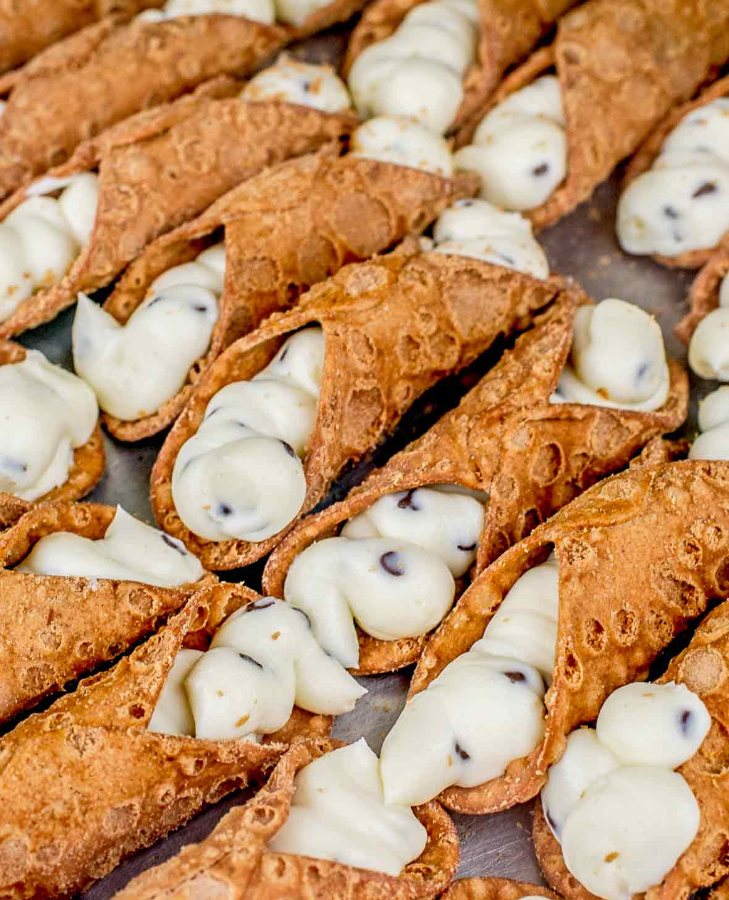

Cannoli are Italian pastries that originated from the island of Sicily. They are known for their crunchy outer shell and creamy inside. The dessert comes from the Palermo and Messina areas. They were traditionally prepared as a treat during Carnevale season but eventually became something eaten year-round.
These pastries are a tube-shaped shell with fried pastry dough which is filled with a creamy, sweet filling that usually contains ricotta. Ricotta is an Italian whey cheese that is made from sheep, cow, goat or Italian water buffalo milk.
"Cannolo" is the singular in the Sicilian language which means "little tube." In English, cannoli is typically used as a singular.